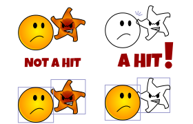
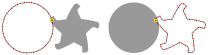

Les 16
Het maken van games
Is SVG geschikt voor het maken van (2D) games?
SVG is een erg goeie basis engine voor 2D games en complexe interactiviteit. Het ondersteund tegenwoordig, out of the box animatie, fonts, grouping, intelligent reuse, filters en basis interactiviteit voor klikken en hoveren, maar we missen nog een paar dingen die erg interessant zijn voor 2D game-development.
Belangrijke functionaliteit
- Het volgen van paden (via Physics)
- Point In Polygon ondersteuning voor complexe hittesten
- Global to Local (G2L) en Local to Global (L2G) coordinaat ondersteuning voor intelligent grouperen en degrouperen. (en hittests)
- Muis/pointer ondersteuning bij schalen/roteren svg (bijzondere implementatie van L2G en G2L).
getPointAtLength, pathLength, getTotalLength
Vijanden in een game zitten vaak op een path, als je dit wilt mengen met physics en ook als het path wat complexer wordt, is het handig hier wat ondersteuning bij te hebben. Ook bij complexe animaties, waarbij je de ene vorm in de andere "morpht" is het handig om een willekeurig punt op een path te kunnen bepalen, zo kun je een vorm tijdelijk "flattenen" en de resulterende polyline is dan makkelijk te morphen ( je kunt ook snap.js gebruiken, natuurlijk, maar da's 80Kb aan je pagina toevoegen).
<path d="M 0,20 h100" pathLength="90"/>.createSVGPoint(), isPointInFill(), isPointInStroke()
Stel je voor dat je een race game maakt. Als de auto OP de weg is, kan hij sneller. De weg is een grillige vorm. Dan heb je wat we in de business noemen een PIP(Point in polygon) of hitTest nodig. Een makkelijke manier om te testen of een punt in een vorm zit.
Om isPointinStroke of isPointInFill te kunnen gebruiken, moet je een punt meegeven, dit is een SVGPoint
. Deze maak je met SVG.createSVGPoint()var point = document.getElementById("SVG-ElementID").createSVGPoint();. Vervolgens kun je de x en y van dit punt zetten.
SVGPoint.matrixTransform() (Local to Global on steroids!)
In praktijk is het best lastig om te voorspellen hoe een element gebruikt wordt, soms wordt je SVG gescaled weergegeven. Dit probleem is er voor SVG en voor HTML elementen, maar voor SVG is het opgelost! Iedere 2D-transformatie, schalen, skewen, roteren, spiegelen kan worden weergegeven met een 2Dtransformation matrix. Via Javascript heb je toegang, tot de Matrix van de SVG zelf en van IEDER element in de SVG..
Gek genoeg, zou een HTML-voorbeeld voor deze demo vele malen ingewikkelder zijn!
OPDRACHT 1 - algemene hitTest
In games heb je vaker dan niet een hittest nodig op 2 grillige vormen.
Nu heb je in principe alle tools om een cirkel te testen op het geraakt worden door een ster.
Let op, ik heb het NIET over bounding box!

Dit is een typisch voorbeeld van een probleem dat je in games heel vaak tegenkomt. Als we kijken naar de radius of de hitbox, is het bepalen van een botsing niet te doen. Wat moeten we dan wel? Als we een pad omtrekken met zogenaamde sentries (in rood).  We geven één van beide vormen een X aantal punten op het hitPath. (Hierbij is het handig de vorm te kiezen, waarbij we zo weinig mogelijk punten nodig hebben, voor een zo accuraat mogelijke test). Vervolgens checken we voor elk van deze punten of hij zich in de fill van het hitPath van de ANDERE VORM bevindt. Het zou handig zijn voor de VOLGENDE opdracht als je hiervoor een algemene functie maakt voor twee paden.
OPDRACHT 2 - Bullet Hell of Flappy Bird?
Maak een klein ontwijk-spelletje in SVG.
Je zou een willekeurige tutorial voor een 2D spel kunnen gebruiken en dit toepassen op SVG.
Weet je niet wat voor spelletje, pak dan Dit spel.
Of gebruik een bullet-hell a la underTale of maak een Flappy-Bird in Wonderland, waarbij je wat interessantere vormen dan rectangles moet ontwijken..
Als je dat wilt, mag je de graphics uit deze SVG gebruiken. Ze hebben al de id's "hero" en "star". Wil je je eigen graphics maken? dat is natuurlijk ook goed!
OPDRACHT 2 - TIP: geluid
Geluid wordt vaak vergeten in webgames... Maar wellicht helpt dit kleine voorbeeldje je om iets van geluid in je game te zetten?
LET OP : in Chrome heb je een eerste klik nodig om geluid af te kunnen spelen, start dus in een game een geluid altijd op een user-klik.
Gebruik hiervoor een voorscherm. Lukt geluid niet? Maak je niet druk, het is niet het doel van deze les.